1QRコードを読み取る
スマホのカメラを、先生からもらった QRコードに向けます。画面に出たURLを押すと、SP-PS のログイン画面がひらきます。
2URLを入力する（QRコードがないとき）
iPhone は Safari、Android は Chrome をひらいて、上のアドレスバーにURLを入れます。
ポイント先生からもらった https:// ではじまるURLでひらいてください。ほかの方法でひらくと、録音ができないことがあります。
SP-PS（エスピー・ピーエス）は、声と口の形を目で見ながら、発音をれんしゅうするアプリです。お手本を見て、録音して、結果を見ます。1回のれんしゅうは1〜2分です。
スマホのカメラを、先生からもらった QRコードに向けます。画面に出たURLを押すと、SP-PS のログイン画面がひらきます。
iPhone は Safari、Android は Chrome をひらいて、上のアドレスバーにURLを入れます。
ポイント先生からもらった https:// ではじまるURLでひらいてください。ほかの方法でひらくと、録音ができないことがあります。
はじめての日だけ、自分のパスワードを決めます。

「利用者ID」に、先生からもらったIDを入れます。はじめてのときは、パスワードは空欄のままでだいじょうぶです。ログインを押します。
ポイントIDは、大文字と小文字をちがう文字としてあつかいます。紙に書いてあるとおりに入れましょう。

「はじめの設定」の画面になります。自分で決めたパスワードを、同じものを2回入れます。パスワードは6文字以上です。
表示を押すと、入れた文字をたしかめられます。さいごに設定してはじめるを押します。
注意パスワードは自分だけのひみつです。友だちにも教えません。わすれてしまったときは、先生に言ってください。
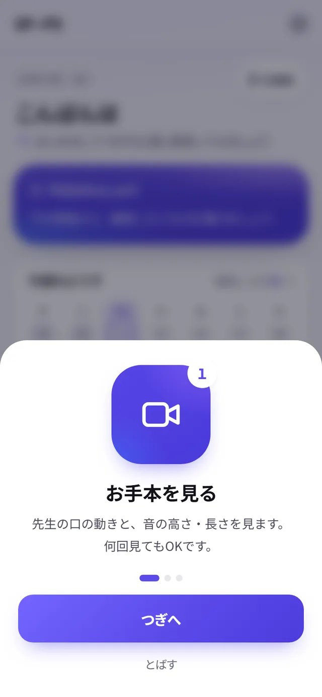
はじめてのときは、使い方の説明が3まい出ます。つぎへで読みすすめて、さいごにはじめるを押すと、ホーム画面になります。
もう一度見たいときは、設定（9章）の「使い方を見る」から見られます。
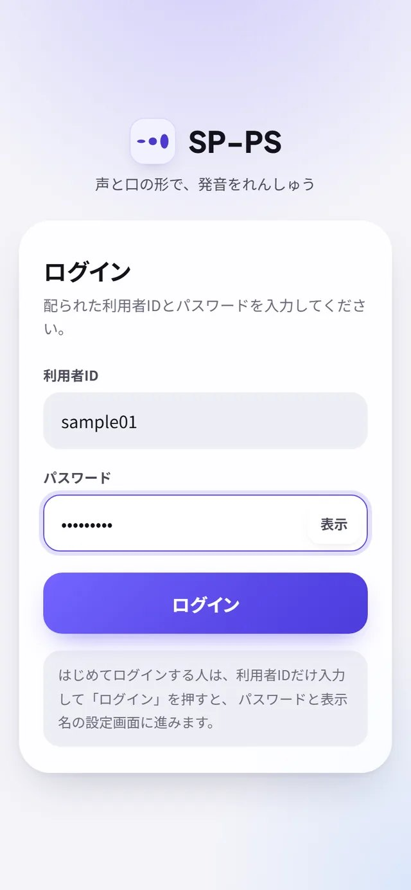
「利用者ID」と、自分で決めた「パスワード」を入れて、ログインを押します。
ポイント「利用者IDまたはパスワードが正しくありません」と出たら、大文字・小文字をたしかめて、もう一度入れます。
ログインすると、ホーム画面になります。今日やることが、いちばん上に出ています。
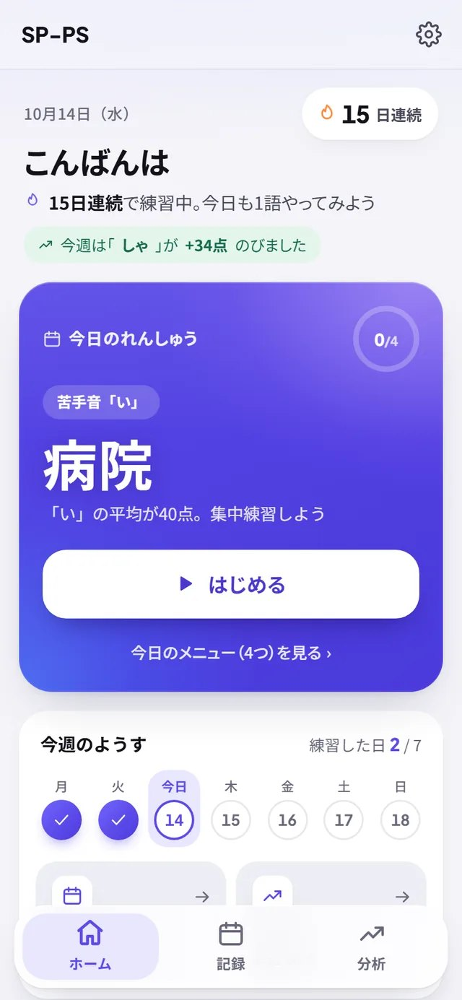
1 2 3 4 5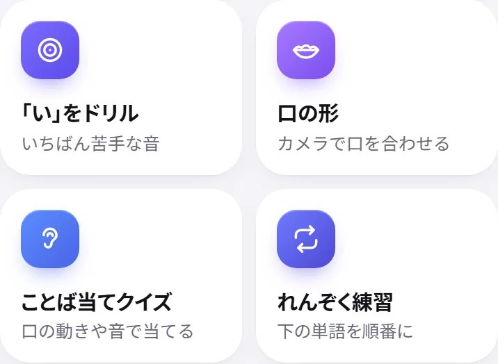
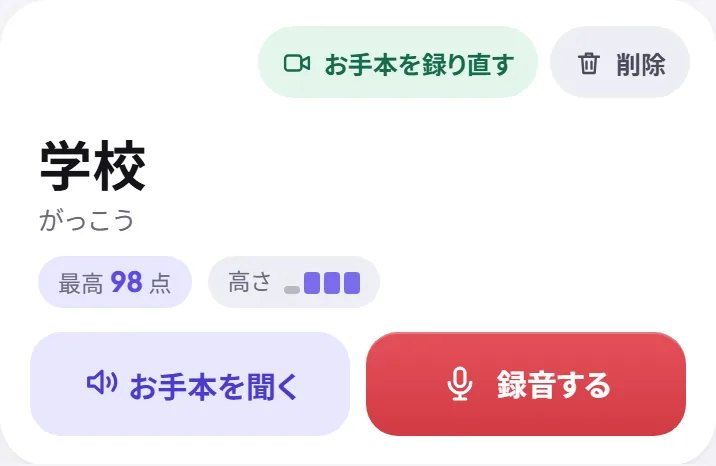
下へすすむと「ほかの練習」（8章）と、「単語」の一覧があります。
単語カードの録音するで、その単語のれんしゅうがはじまります。お手本を聞くで、お手本の音が聞けます。「最高 98点」は、これまででいちばんよい点数です。
一覧の上の「すべて」「マスター」などのボタンで単語をしぼりこめます。虫めがねのボタンで、単語をさがせます。
注意カードの上の「お手本を録り直す」「削除」は、お手本を登録しなおすときのボタンです。ふだんは押しません。「削除」を2回押すと単語が一覧から消えます。まちがえて消したときは、先生や家の人に言ってください（元にもどせます）。
ホームの▶ はじめるか、単語カードの録音するを押すと、録音の画面になります。1回のれんしゅうは、つぎの順番ですすみます。
 1
2
3
4
1
2
3
4
注意✓ がつかないときは、マイクかカメラが使えていません。出てきた直し方を見るを押すか、10章を見てください。
 1
2
3
4
1
2
3
4
何回見てもかまいません。見おわると、ボタンが録音すると▶ もう一度見るに変わります。
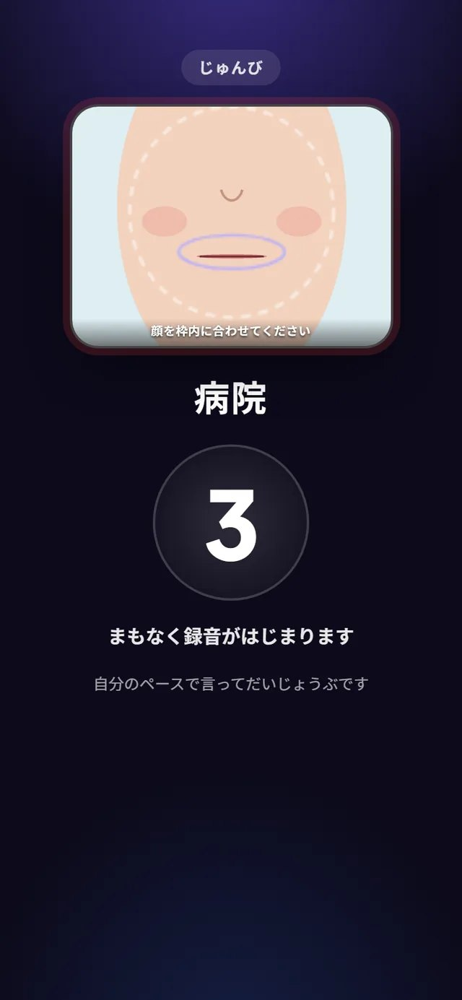
カメラに自分の口がうつります。顔を点線の枠に合わせて、かまえましょう。数字がおわると、録音がはじまります。
先生の口が出ていた場所に、そのまま自分の口が出ます。さっき見た形と、くらべやすくなっています。

「録音しています」になったら、単語を1回言います。お手本に合わせなくてだいじょうぶ。自分のペースで言いましょう。
言いおわったら■ 録音停止を押します。言いおわって1.5秒ほど静かにしていると、自動で止まります。
ポイント下の帯は、お手本の音の長さです。帯に合わせて言わなくてもOKです。

お手本の口と、いま撮った自分の口が、ならんで再生されます。「ゆっくり」でも見られます。
結果を見る →を押します。言いなおしたいときは、すぐ録り直すかお手本を見て録り直すを押します。
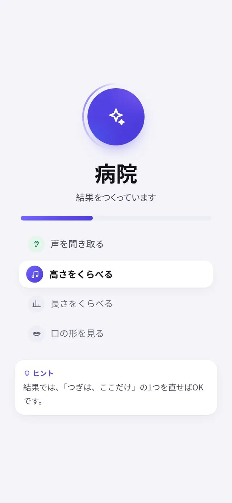
「結果をつくっています」の画面で、少し待ちます。声を聞き取る → 高さ → 長さ → 口の形 の順に調べています。
待っているあいだに、下にヒントが出ます。
結果は「まとめ」「くらべる」「口と声」の3つのタブに分かれています。はじめに「まとめ」が出ます。
 1
2
3
4
5
6
1
2
3
4
5
6
90点以上になった単語は「マスター」です。

まとめを下へすすむと出てきます。直すところを1つだけ教えてくれます。この例では、「ん」の長さがお手本とちがっています。
ボタンを押すと、その場所をくらべるグラフがひらきます。つぎは、ここだけに気をつけて言ってみましょう。
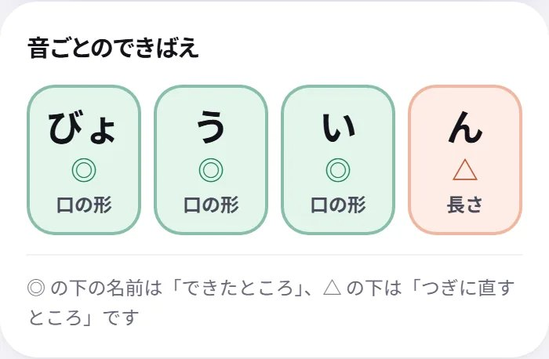
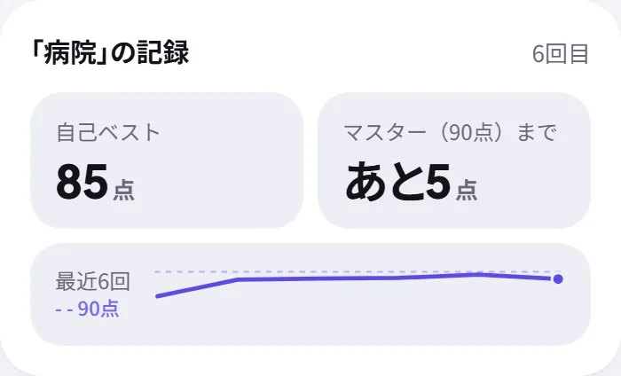
音ごとのできばえ：1つの音ごとに、できたところ（◎）と、つぎに直すところ（△）が分かります。◎の下の名前は「できたところ」、△の下は「つぎに直すところ」です。
この単語の記録：何回目のれんしゅうか、自己ベスト、マスター（90点）まであと何点か、最近の点数の線が見られます。
「くらべる」タブでは、お手本（灰色）とあなた（青むらさき）を、グラフでくらべます。上のボタンで「高さ」「長さ」「口の形」を切りかえます。
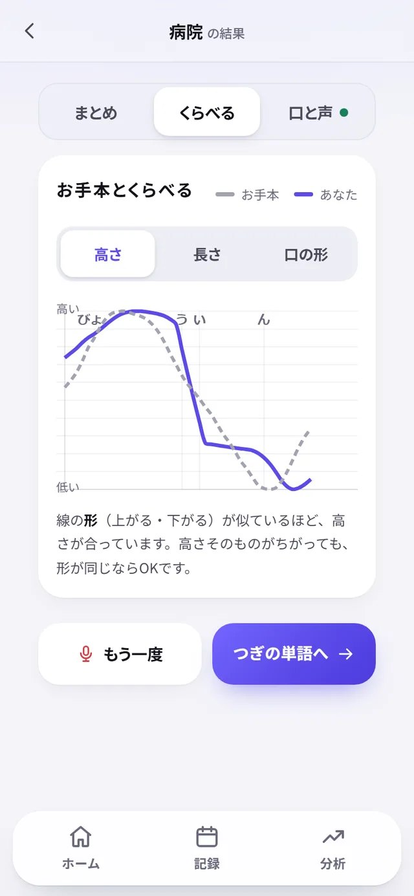
高さ線の形（上がる・下がる）がにているほど、高さが合っています。高さそのものがちがっても、形が同じならOKです。
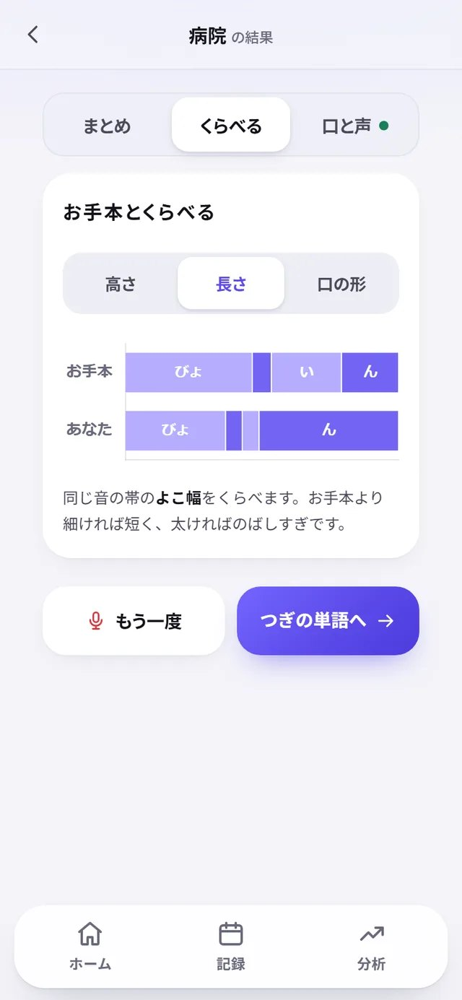
長さ同じ音の帯の、よこ幅をくらべます。お手本より細ければ短く、太ければのばしすぎです。
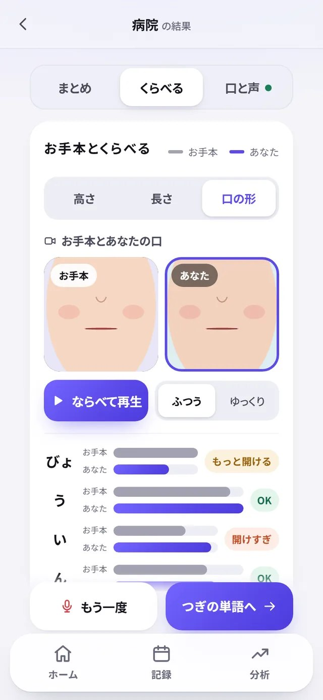
口の形お手本とあなたの口を、ならべて再生できます。バーが長いほど、口を大きく開けています。お手本と同じ長さが目標です。
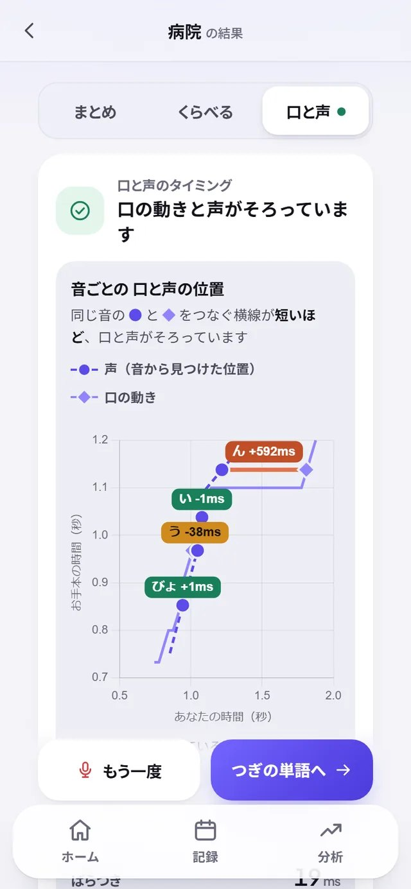
口の動きと声が、同じタイミングで出ているかを見ます。● が声、◆ が口の動きです。● と ◆ をつなぐ横線が短いほど、口と声がそろっています。
ずれが大きい音があると、合計点から少し（いちばん多くて5点）引かれます。そのときは、どの音で引いたかが、このタブに出ます。
画面下のタブの「記録」と「分析」で、これまでのれんしゅうをふりかえります。

記録最近5回の平均点と、はじめのころから何点のびたか。連続日数、れんしゅうした回数、点数のうつりかわり、れんしゅうした日のカレンダー、さいきんのれんしゅうの一覧が見られます。

分析1回れんしゅうするごとに、平均で何点のびているか。単語ごとに「のびている」「足ぶみ中」「マスター」が分かります。足ぶみ中の単語は、その場でれんしゅうできます。
ポイントれんしゅうが5回より少ないあいだは、分析のかわりに「もう少し練習すると、分析が見られます」と出ます。
ホームの「ほかの練習」から、つぎのれんしゅうができます。れんしゅうの記録によって、出てくるボタンが変わります。
ホーム右上の歯車を押すと、設定がひらきます。
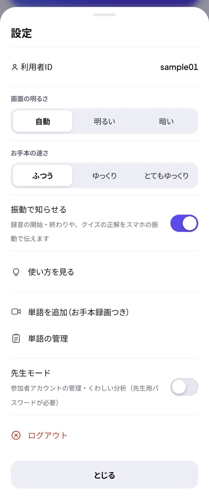
スマホが、SP-PS にマイクやカメラを使わせないようになっています。録音の画面の直し方を見るを押すと、つぎの説明が出ます。


それでも使えないときは、ほかのアプリがマイクを使っていないか、たしかめてください。
発音が悪いわけではありません。つぎのことをためして、もう一度録音しましょう。
たくさんの人が同時に「結果を見る」を押すと出ます。発音や録音がわるいわけではありません。少し待ってからもう一度ためすを押すと、録音しなおさなくても結果が出ます。
録音のあとに「いま混み合っています。順番が来たら自動で送ります」と出たときは、そのまま少し待ちましょう。
IDの大文字・小文字をたしかめてください。パスワードをわすれたときは、先生に言ってください。先生がパスワードをリセットすると、もう一度「はじめの設定」から決めなおせます。れんしゅうの記録は消えません。
パスワードを5回つづけてまちがえると、「続けて間違えたため、○秒待ってから…」と出て、1分ほど入れられなくなります。少し待ってから、ゆっくり入れなおしましょう。
SP-PS が使えない時間かもしれません。少し時間をおいてからためすか、先生に知らせてください。
点数は、お手本とのちがいを数字にしたものです。1回ごとに上がったり下がったりします。「つぎは、ここだけ」を1つずつ直していきましょう。「分析」の「のび方」で、少しずつのびていることをたしかめられます。